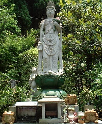
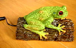
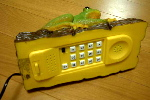
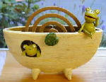
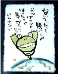
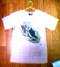
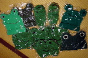

|
 えびの市に「かえる観音」！【宮崎発=秋丸閣下】えびの市の八幡か丘の登り口にある真言宗 弘泉寺の境内に「かえる観音」を発見。観音像の周りにはかえるがいっぱい。「無事に帰る」「自分を変える」など「返る」「買える」「還る」「飼える」「替える」「代える」「換える」「孵る」の願い事を三つまでかなえてくれるという。「祈願の人は一つの願い事たびに,一匹のかえるを奉納しましょう」という看板がたっている。
【全国かえる奉賛会】おおおー。すごいぞ！カエルを３つ持参して、願いごとをかなえてもらおう。大王は願いごとが多いので、リュックにぎっしりカエルを詰めて参詣したいものである。
実用性保証のカエル電話！  【熊本発のんたん同志記者】かえる展、お疲れ様でした。とってもと〜っても楽しかったです。帰りには憧れのカエルマスクをＧＥＴすることが出来たし♪また来年も楽しみにしていますッ。ところで、今回はこんな電話をネットショッピングで手に入れたのでご紹介です。ね、なかなかリアルで可愛いでしょ！ちなみにリング音もカエルの鳴き声という優れもの！ただ・・・ちょっとペンキ臭い・・・非実用的な電話ですが、私のかなりのお気に入りです。
【全国かえる奉賛会】なんと実用性が高い電話機であろうかあああ。イマスグに全国の自治体と企業は、すべての電話を、カエル電話に交換しようではないかあああ。かえるをつかんで通話できるなんて、とっても使いやすそうだ。
かえるのないしょ話開催中！  【大阪発みると様】豊中にあるクラフトショップ「fabric art shop みると」店内にて梅雨の季節に合わせて「かえるのないしょ話」と題して６月３０日まで藤本美千子さんのかえるの語り絵とかえるのオブジェを展示しています。お父さんに送るエールとして語られた文章とかえるのしぐさが楽しい語り絵福井の海岸まで拾いにいったまるっこい石の上に乗ったかえるなどかえるをテーマに作品作りをなさっていらっしゃいます。 ぜひ、かえる好きの方に（そうでないかたも）作品を見ていただければ幸いです。  かえるティーシャツ発見！【福岡発=ＨＮ「かえる公務員」同志記者】ＨＮ「かえる公務員」です。先日、岩田屋Ｚーｓｉｄｅを徘徊していたところ、ＺＵＣＣＡのメンズでかえるＴ−シャツを発見しました。しかし、メンズであったため、サイズが大きすぎるとあきらめたところ、ショップのスタッフから「レディスが２階にあるので、もしかしたら同じデザインがあるかも」との一言。行ってみると、全く同じデザインがレディスのＺＵＣＣＡでも展開しており、思わずゲットしました。 メンズ９０００円、レディス８０００円とＴシャツにしては、ちと高めではありますが、リアルなかえるのイラストがグッドです。色はグレー、グリーン、ピンク、ブルーの４色で、グレーとグリーンは緑のかえる、ピンク、ブルーはそれぞれ濃いピンク、ブルーのかえるがのっています。もう一つのデザインは色は同じ展開で、☆がちらしてあって、小さくかえるがのっているというものでした。
カエラーには、売り切れる前にぜひ、チェックしてほしいものです。
クリーニング店も絶賛カエル帽！ 【福岡発=げこげこ大王７世直筆】今年のカエル展も無事に終了したので、開催中に大活躍した「カエル帽」を、クリーニングに出したのです。できあがりはごらんの通り！ところが、これが毎年、クリーニング店のパートのおばさんたちに超人気なのだ。なんでも、工場での洗濯段階、包装段階で、それぞれに人だかりができて、みんなで見物するそうな。商品でなければ、一度はかぶってみたいのであろう。
来年は、クリーニングパート主婦カエル帽隊を編成してもいいので、いっぺんカエル展にきてみてくれえええええええええ。
カエル展３スタッフＴシャツをネット記念販売へ！ 【福岡かえる展３実行委員会】福岡に来たいけど来れないカエラーのために、カエル展気分を味わえる、スタッフ専用Ｔシャツを特別販売しましょー！
【福岡かえる展３実行委員会】福岡に来たいけど来れないカエラーのために、カエル展気分を味わえる、スタッフ専用Ｔシャツを特別販売しましょー！カワノナミさん作のイラストを使ったポスターをそのまま大胆にプリントしました。かなりインパクトある。このところ、世界的にブームになっている日本語Ｔシャツとして、海外旅行などに着てゆくと、現地の人に受けるかも！！ 価格は会場価格よりも割安な２０００円（送料別）で、おわけします。。サイズはＳ（あと少し）、Ｍ（あと１着）の２種類のみになってしまいました。 「カエル 雨に唄えば・展」も開催！【東京発=正勝、薫同志記者】「カエル 雨に唄えば・・・・・展」が2001年6月5日（火）〜17日（日）11:00〜18:00まで（月曜日定休）ギャラリ カタカタ＝ 東京都世田谷区宮坂3-21-13TEL：03-3439-5511で開催されていました。
投稿採用者に武功カエル徽章を授与！ |
かえる古新聞過去に取り上げた記事を見出し付きで一覧したい人は、ここをクリック◆創刊号を見る◆先週号を見る◆話題の号を見る◆かえる新聞の昔を読む◆COOL NET FROG RANKING !
|
私も入っています。。全国かえる奉賛会
大王様に会うには、このバナーをクリック。ずっと奥に写真館があるぞ。全国かえる奉賛会に入会するには、自分のホームページのどこかに、下の部分を追加するとバナーがリンク付きで表示されるぞ。どんどん入会しましょー |


|